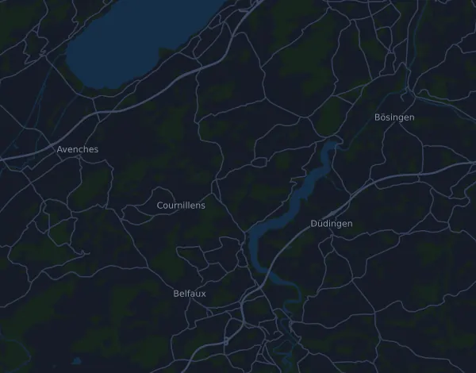

Morat-Fribourg 17.17 km
- Distanz
- 17,2 km
- Höhenmeter
- ↑ 415 m
- Höchster Punkt
- 620 m ü. M.
- Untergrund
- Straße
- Profil
- Hügelig
- Start
- 10:13 Uhr
- Verpflegungsstellen
- 3
Höhenprofil
Mit Mila vorbereiten
Mila ist eine Lauf-Coach-App. Nimmst du einen Lauf in deinen Plan auf, plant der Coach deine Wochen bis zum Start nach deiner Form und gibt dir eine Zielzeitprognose und einen Plan für Tempo, Getränke und Verpflegung auf der Strecke.

Der richtige Lauf am richtigen Tag.
Die Strecke

Über die Strecke
Morat-Fribourg 17.17 km ist ein Straßenlauf in Murten (Morat), Schweiz, über 17,2 km. Die Strecke hat insgesamt 415 Höhenmeter bergauf und 253 bergab, 24 m pro km, und ist damit hügelig. Der höchste Punkt liegt auf 620 m ü. M., der tiefste auf 438 m.
Der größte Anstieg beginnt bei km 2,5: 73 Höhenmeter auf 1,6 km mit durchschnittlich 4,7 % Steigung, bis auf 548 m. Insgesamt hat die Strecke 7 Anstiege ab 25 Höhenmetern; der letzte beginnt bei km 16,9.
Der Veranstalter nennt 3 Verpflegungsstellen, die erste bei km 5,0 und die letzte bei km 13,5.
In der Mila-App beschreibt der Coach die Strecke ausführlich in deiner Sprache und plant dein Pacing und deine Verpflegung dafür.
Anstiege
| Beginnt bei | Länge | Höhenmeter | Steigung | Gipfel (m ü. M.) |
|---|---|---|---|---|
| km 0,2 | 2,2 km | 35 m | 1,6 % | 480 |
| km 2,5 | 1,6 km | 73 m | 4,7 % | 548 |
| km 4,1 | 1,3 km | 48 m | 3,7 % | 591 |
| km 6,1 | 970 m | 38 m | 3,9 % | 586 |
| km 11,8 | 1,4 km | 68 m | 4,8 % | 616 |
| km 14,3 | 1,5 km | 27 m | 1,8 % | 611 |
| km 16,9 | 340 m | 26 m | 7,8 % | 620 |
Vor dem Start
Verpflegungsstellen
| Bei | Angebot |
|---|---|
| km 5,0 | Wasser |
| km 8,0 | Wasser, Sportgetränk, Essen |
| km 13,5 | Wasser, Sportgetränk, Essen |
Startzeiten
- 10:13 Uhr
Quelle: morat-fribourg.ch, abgerufen am 15. Oktober 2026
Pace-Tabelle
Morat-Fribourg 17.17 km in 1:30:00 – Pace pro km und Zwischenzeiten
5:13 pro km · km 5: 26:06 · km 10: 52:12 · km 15: 1:18:18 · Ziel: 1:30:00
Morat-Fribourg 17.17 km in 1:45:00 – Pace pro km und Zwischenzeiten
6:05 pro km · km 5: 30:27 · km 10: 1:00:54 · km 15: 1:31:21 · Ziel: 1:45:00
Morat-Fribourg 17.17 km in 2:00:00 – Pace pro km und Zwischenzeiten
6:58 pro km · km 5: 34:48 · km 10: 1:09:36 · km 15: 1:44:25 · Ziel: 2:00:00
Morat-Fribourg 17.17 km in 2:15:00 – Pace pro km und Zwischenzeiten
7:50 pro km · km 5: 39:09 · km 10: 1:18:18 · km 15: 1:57:28 · Ziel: 2:15:00
Die Zeiten setzen ein gleichmäßiges Tempo auf der ganzen Strecke voraus. Das ist reine Rechnung, keine Prognose: an Anstiegen, im Gedränge und an Verpflegungsstellen schwankt das Tempo.
Häufige Fragen
Wann findet Morat-Fribourg 17.17 km statt?
Morat-Fribourg 17.17 km findet am Sonntag, 3. Oktober 2027 statt. Prüfe Datum und Startzeit beim Veranstalter.
Wann ist der Start bei Morat-Fribourg 17.17 km?
Laut Veranstalter: 10:13 Uhr.
Wie lang ist Morat-Fribourg 17.17 km und wie viele Höhenmeter hat die Strecke?
Der Lauf ist 17,2 km lang mit 415 Höhenmetern bergauf und 253 bergab. Der höchste Punkt liegt auf 620 m ü. M.
Wie ist die Strecke von Morat-Fribourg 17.17 km?
Die Strecke ist hügelig, mit durchschnittlich 24 Höhenmetern pro km. Sie hat 7 Anstiege ab 25 Höhenmetern; der größte beginnt bei km 2,5: 73 Höhenmeter auf 1,6 km. Sie führt vom Start zu einem Ziel an einem anderen Ort. Der Untergrund ist Straße.
Gibt es Verpflegungsstellen bei Morat-Fribourg 17.17 km?
Ja. Der Veranstalter nennt 3 Verpflegungsstellen: km 5,0 (Wasser); km 8,0 (Wasser, Sportgetränk, Essen); km 13,5 (Wasser, Sportgetränk, Essen).
Wie teile ich mir Morat-Fribourg 17.17 km ein?
Lauf eher mit gleichmäßiger Anstrengung als mit gleichmäßigem Tempo: Lass das Tempo an den Anstiegen sinken, hol es zurück, wo es flacher wird, und halte dich auf den ersten Kilometern zurück. Die größten Anstiege beginnen bei km 2,5, km 4,1, km 6,1 und km 11,8. In Mila bekommst du einen Pace-Plan für genau diese Strecke, passend zu deiner Form.
Ähnliche Läufe
Weitere Läufe in der Nähe
- Jungfrau-Marathon 42 km11. September 2027 · Interlaken, Schweiz
- Engadin Sommerlauf 23 km22. August 2027 · Sils, Schweiz
- Davos X-Trails (tidigare Swissalpine Davos) – Diamond Run 68 km24. Juli 2027 · Davos, Schweiz
- Montreux Trail Festival – MXTREME 100 (102 km)24. Juli 2027 · Bex, Schweiz
- Eiger Ultra Trail by UTMB – E101 Ultra Trail17. Juli 2027 · Grindelwald, Schweiz
- Trail Verbier St-Bernard by UTMB – X-Alpine (140 km)9. Juli 2027 · Verbier, Schweiz
Mit Mila vorbereiten
Der richtige Lauf am richtigen Tag.
Die Angaben stammen aus der Streckendatei und den Informationen des Veranstalters. Prüfe Datum, Startzeiten und Regeln beim Veranstalter.
Mila ist nicht mit dem Veranstalter oder den Sponsoren des Laufs verbunden und wird von ihnen weder gesponsert noch empfohlen. Namen und Marken gehören ihren Inhabern. Veranstalter oder Rechteinhaber? Änderung oder Entfernung beantragen